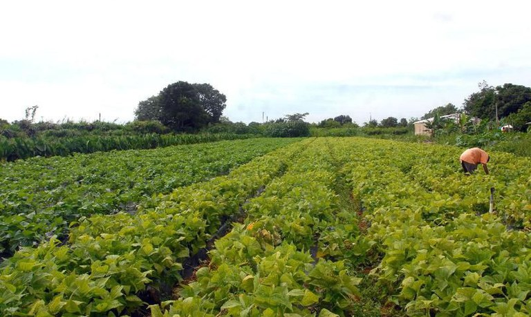

Tecnologia > Inovações
por Dr.Wendller
Atualizado em 04/11/2020 às 10h00
Mais mulheres estão presentes na agricultura familiar, mostra estudo da Conab
A participação feminina nas modalidades do Programa de Aquisição de Alimentos (PAA) alcançou 80% em 2019
Foto: Agência Brasil
A presença das mulheres na agricultura familiar tem aumentado ao longo dos anos. A participação feminina nas modalidades do Programa de Aquisição de Alimentos (PAA) alcançou 80% em 2019, de acordo com estudo da Companhia Nacional de Abastecimento (Conab), divulgado na última quinta-feira (29).
Segundo Marisson de Melo Marinho, superintendente de suporte à agricultura familiar da Conab, a participação de mulheres do PAA vem sendo incentivada.
"A partir de 2016, critérios mais claros beneficiando organizações da agricultura familiar geridas e com maior participação de mulheres.
Tais ações fizeram com que, em 2019, o número de mulheres participantes do PAA chegasse a 80%. O maior índice nos últimos tempos", disse.
"Ficamos muito felizes com isso porque incentiva a participação das mulheres nas cooperativas, nas associações, incentivando o acesso aos mercados, garantindo renda para essa importante população no meio rural", afirmou Marisson de Melo.
O incentivo à maior inclusão feminina no PAA começou a fazer parte das políticas públicas voltadas ao pequeno agricultor a partir de 2011, quando foi instituído como um dos critérios de priorização na seleção e execução do programa a participação mínima de 40% de mulheres como beneficiárias fornecedoras na modalidade de Compra com Doação Simultânea (CDS) e 30% na de Formação de Estoque (CPR-Estoque).
Mulher no campo
A baiana Alvenise Dias Vasco é uma das agricultoras que retrata o estudo da Conab. Ela nasceu e cresceu em uma família de agricultores.
Quando mudou para Brasília, se casou, teve filhos e depois se separou. Foi aí que viu a necessidade de voltar para a zona rural em busca da agricultura como forma de sustentar a família.
Hoje, ela vive no assentamento Santo Antônio das Brancas, no município de Água Fria (GO), produz hortaliças, tem gado de corte e de leite, tanque de peixe e dirige o caminhão para vender a produção no Ceasa do Distrito Federal e na feira de Planaltina, cidade de Brasília.
"Tenho orgulho de dizer que contribuí para esse mundo, com a educação dos meus filhos, tirando todo o sustendo da lavoura.
A gente come bem, come o que a gente planta, comer o feijão que você planta é muito bom, as verduras que você planta.
Não tenho dificuldade de trabalhar no meio rural com absolutamente nada, estudei, fiz alguns cursos, adquiri meu negócio, sou motorista de caminhão, carrego minha verdura, vou paro Ceasa vender", relatou Alvenise Dias.
Autonomia econômica para as mulheres
O compêndio de estudos Programa de Aquisição de Alimentos - PAA: Resultados das Ações da Conab em 2019 traz ainda dados sobre a participação feminina dividida por região, sendo a maior parte do Sudeste (88%), seguida pelo Nordeste (84%), Centro-Oeste (80%), Norte (67%) e Sul (65%).
Em relação à renda média anual, no mesmo período, a maior remuneração ocorreu no Centro Oeste, R$ 7.033,87 e a menor na região Sul, R$ 6.619,70.
O estudo registra que o fortalecimento da capacidade produtiva das organizações compostas por mulheres garante a autonomia econômica a esse segmento da população.
"Ressalta-se ainda que o fortalecimento do trabalho das mulheres no campo implica também a consolidação da segurança alimentar de suas famílias", diz o texto.